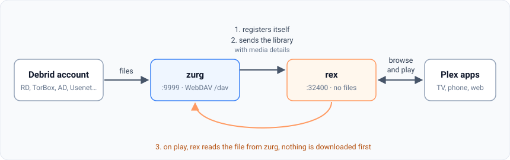
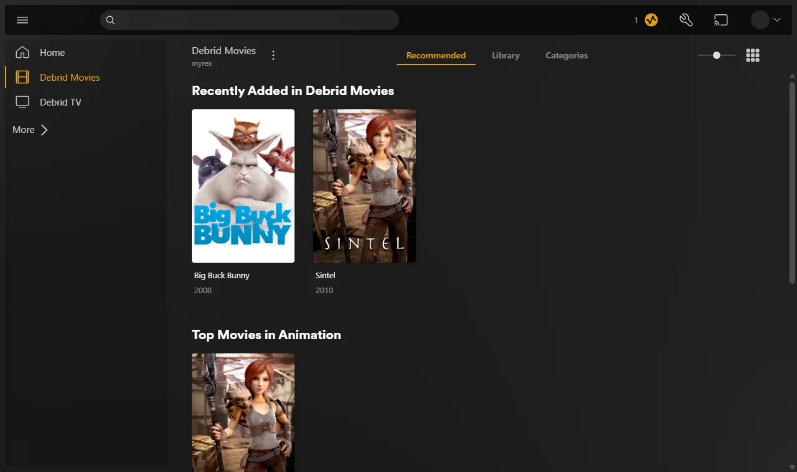
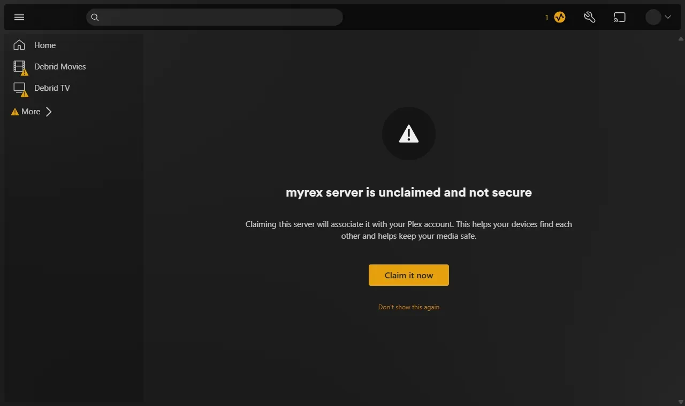

rex with zurg
rex is a Plex Media Server that owns no files. The official Plex apps see it as a normal Plex server. Any app can fill it (rex with your own app); this page sets it up with zurg, which sends it your debrid library, and when you press play rex streams the file straight from zurg. Nothing is downloaded first.
This page takes you from nothing to playing a movie, one step at a time. Every step says what it does, why it matters and what you should see before you move on. If what you see does not match, stop there: the next step will not fix it.

Four things to know before you start:
- zurg is the part that talks to your debrid service. It lists what is in your account and serves the files.
- rex is the part your Plex apps talk to. It keeps no files and needs no disk for media. It does not need rclone or a mount.
- zurg tells rex about itself. You give zurg the address of rex, and zurg does the rest. You never type zurg's details into rex.
- zurg and DMM decide what each file is; Plex describes it. zurg asks DMM which movie or episode each file is, and rex shows that title with the posters and summaries Plex's own metadata gives it once rex is on a Plex account. rex never guesses from a file name.
rex opened as a closed beta for sponsors on October 15 and reaches the public on October 31. See rex.debridmediamanager.com for access.
Before you start
This page needs rex nightly 2026.10.25 or newer and zurg nightly 2026.10.22 or newer.
Step 1. Install zurg
What it does. Downloads zurg, asks for your debrid account and starts zurg as a service that comes back after a reboot.
Why it matters. Everything rex shows comes from zurg. If zurg cannot see your library, rex never will.
curl -fsSL https://raw.githubusercontent.com/debridmediamanager/zurg-site/main/public/install.sh | bash
sudo loginctl enable-linger "$USER"The installer asks which services you use (type 1 for Real-Debrid) and then for your API token. The token is hidden while you paste it. zurg goes into ~/zurg. The second line keeps your services running when you log out.
What you should see. The installer ends with a list of PASS lines and ==> zurg is installed in /home/you/zurg. zurg then loads your library: a few seconds for a small account, about ten minutes for one with a thousand releases on Real-Debrid. Open zurg's dashboard at http://<this machine>:9999: Library Size counts your items once it is done.
Already run zurg? Update and restart it with cd ~/zurg && ./zurg update && ./zurg service restart.
Step 2. Install rex
What it does. Downloads rex into ~/rex and starts it as a service, with everything the later steps need. The steps after this one need no restart; only the optional sections further down do.
Why it matters. rex is what your Plex apps talk to. The first start creates rex.db, which holds your libraries, everything zurg sends and your watch history.
mkdir -p ~/rex && cd ~/rex
export PATH="$PATH:$HOME/zurg/bin"
A=$(dpkg --print-architecture)
TAG=$(gh api 'repos/debridmediamanager/rex/releases?per_page=1' --jq '.[0].tag_name')
gh release download "$TAG" -R debridmediamanager/rex -p "*-linux-$A.tar.gz"
tar xzf rex-*-linux-$A.tar.gz --strip-components=1 && rm rex-*-linux-$A.tar.gzThis takes rex's newest build, usually a nightly, for your machine's processor.
Find rex's LAN IP: hostname -I prints several, so take the one on your home network, not one starting with 172.17. (Docker) or 100. (Tailscale). This page writes it as 192.168.1.20 everywhere: put yours in its place. Plex apps, zurg and your own commands all reach rex there.
Now make it a service. Create ~/.config/systemd/user/rex.service:
mkdir -p ~/.config/systemd/user
nano ~/.config/systemd/user/rex.service[Unit]
Description=rex
[Service]
WorkingDirectory=%h/rex
EnvironmentFile=-%h/rex/rex.env
ExecStart=%h/rex/rust/target/release/rex
Restart=always
RestartSec=5
[Install]
WantedBy=default.targetPlex Media Server runs on the same machine? End the ExecStart line with --port 32500 and use 32500 wherever this page says 32400: Plex already holds port 32400 and the ports apps use to find servers, and on any other port rex leaves those to Plex.
systemctl --user daemon-reload
systemctl --user enable --now rex
journalctl --user -u rex -fWhat you should see. Among the first lines:
INFO seeded rex.db: an empty library named yourhost, machine=...
INFO no source yet: one registers at PUT /rex/sources/{name} (docs/feed-api.md)
INFO claim state: unclaimed
INFO rex on http://yourhost:32400 machine=... items=0 parts=proxyrex names itself after the machine; your Plex apps show that name. no source yet is right: zurg has not been told about rex. Leave the log open.
Step 3. Add it to a Plex account
What it does. Registers rex on a Plex account, as you would a real Plex Media Server, and shares it with your own account.
Why it matters. rex gets every title's name, poster, summary and episode names from Plex's own metadata, and it may only ask Plex once it is on an account. Titles zurg sent before the claim are named as soon as it lands. It also makes Fix Match work, removes the "unclaimed" notice and is needed before
Use a fresh Plex account for this, not your own. rex is not made by Plex, and Plex could take action against an account that registers it. Keep your real account, with its watch history, friends and any Plex Pass, out of reach: make a new free account at plex.tv with an email address you do not use elsewhere, register rex on that one, and share rex with your own account. You then watch signed in as yourself, the way you would watch a friend's server. rex plays nothing until this step is done.
Register rex on the fresh account
- Sign in to plex.tv as the fresh account, open plex.tv/claim and copy the code. It expires after about five minutes.
-
On the rex machine:
curl -X POST "http://192.168.1.20:32400/myplex/claim?token=claim-xxxxxxxxxxxx" curl -s http://192.168.1.20:32400/identity
What you should see. The second command shows claimed="1", and ~/rex/claim_state.json exists. Back that file up: without it you have to claim again with a new code. While it exists, rex refuses a second claim.
Share it with your own account
- Still signed in as the fresh account, open app.plex.tv, then Settings (the wrench), Manage Library Access and Grant Library Access.
- Enter your own account's username or email, pick the rex server and both libraries, Movies and TV Shows, and send the invite.
- Sign out, sign in as yourself, and accept the invite. It arrives by email and in app.plex.tv.
What you should see. Signed in as yourself, Plex apps list the rex server beside your own servers, with both libraries, empty until the next step. Your watch history on rex is your own: it is kept apart from the fresh account's. Share it the same way with anyone else in your household.
Step 4. Connect zurg to rex
What it does. Tells zurg where rex is. zurg introduces itself to rex, sends its whole library, reads each file's video and audio details and sends those too, then every change as it happens.
Why it matters. This is the only link between the two. rex has no setting for zurg: if rex_url is missing, rex stays empty. Your DMM key lets zurg ask DMM which movie or episode each file is; without one zurg works it out from the name, and fewer titles match.
First check whether zurg's config already has either line:
grep -n '^rex_url:\|^dmm_api_key:' ~/zurg/config.ymlIf it prints a line, that key is already set: change it there with nano ~/zurg/config.yml and leave it out of the printf below. Without a DMM key, leave dmm_api_key out. zurg will not start with the same key twice, and zurg's dashboard writes dmm_api_key into this file when you enter your key there.
printf '\nrex_url: http://192.168.1.20:32400\ndmm_api_key: your_dmm_key\n' >> ~/zurg/config.yml
cd ~/zurg && ./zurg service restartWhat you should see. Once zurg has loaded the library again, zurg's log (~/zurg/logs/zurg.log) says DMM placed N releases for rex (without a DMM key: Placed N releases for rex by their names) and rex's log prints:
INFO SOURCES PUT /rex/sources/zurg -> 200
INFO FEED zurg upsert: 0 created, 0 updated, 200 held, 0 unchanged, 0 rejected
INFO FEED identified "Sintel.mp4" -> movie tmdb:45745 (placed)
INFO FEED zurg upsert: 2 created, 0 updated, 0 held, 0 unchanged, 0 rejectedheld means zurg has not read that file's details yet. zurg starts reading them as soon as its library has loaded, one release at a time, and a season pack's episodes arrive together. With a DMM key, up to about 20 releases a minute come from DMM's stored details. A large library fills over several hours. Each title appears in rex as its details arrive. Anything you add to your debrid account later shows up by itself once zurg has read it.
If not.
- Nothing at all in rex's log: zurg is still loading its library, zurg is out of date (update it as in
step 1 ), orrex_urlhas a typo.grep 'rex feed' ~/zurg/logs/zurg.log | tail -n 5shows zurg's side: with norex feed: pushing the library to ...line zurg did not readrex_url, andrex feed: snapshot failed, retrying in ...means it cannot reach rex at that address. - A title stays
heldand zurg logsCannot probe file ...: the first read from the debrid service failed. zurg tries again by itself; Analyze & Tag Library under Utilities on zurg's dashboard tries at once. - Titles arrive but no
identifiedlines: zurg could not match them by name, and withdmm_api_keyset it logsDMM refused the API key for placementwhen the key is not a sponsor's. zurg then matches by name and tries the key again a day later, or at once when it restarts.
Leave plex_server_url in zurg's config pointing at your real Plex, or empty. Pointed at rex, zurg would take rex's own matches and give them to DMM as the answer, wrong ones included.
Running several zurgs (one per debrid service)? Give each its own name with an extra line, rex_source: rd, rex_source: tb and so on. They fill the same libraries.
Why DMM places the files
File names often number episodes differently from the episode lists Plex apps show. DMM knows where each file really belongs:
A file zurg cannot place stays unmatched: a film titled as its file, or an episode in a show named after its release, numbered in file order. With a DMM key zurg asks DMM about it again a day later, and you can fix it yourself with Fix Match in a Plex app, signed in as the fresh account that owns rex (rex refuses it to the accounts it is shared with). A title you corrected with Fix Match stays as you set it.
Step 5. Watch something
What it does. Opens rex in a Plex app, the same way you would open any Plex server.
Why it matters. This is the point of the whole setup. It also proves the last link: rex reading a file from zurg while you watch.
Open a Plex app (not a web browser) on a phone, TV or computer on the same home network. rex shows up on its own under the machine's name, with Movies and TV Shows. Pick a movie and press play.
At home nothing else is needed: Plex apps find rex with Plex's own local discovery and connect to it over your network. That needs the device on the same network as rex (not a guest Wi-Fi or a separate VLAN). Discovery runs on UDP ports 32410 and 32414, so a firewall on the rex machine must let those in. rex answers discovery when it uses port 32400. If you moved rex to 32500 because Plex runs on the same machine, discovery is left to that Plex, and apps find rex through the Plex account it is

What you should see. Posters, titles and years as on any Plex server, and the movie plays.
Two things you may meet:
- "yourhost server is unclaimed and not secure". A Plex app says this about any server that is not on a Plex account, and rex plays nothing until it is on one. Do
step 3 . Do not press Claim it now while signed in as yourself: it registers rex on your own account. - "This server is not powerful enough to convert video". The app cannot play the file as it is, often a web browser meeting AC3 or DTS sound. Plex apps on TVs and phones play most files as they are. To play everything everywhere, set up
Converting video .

zurg's folders other than movies and shows, such as anime, need nothing: each file goes to Movies or TV Shows by what zurg says it is. A file zurg cannot tell is an episode waits in Movies.
To give one of those folders libraries of its own, add rex_shows and/or rex_movies under it in ~/zurg/config.yml, beside its filters, then restart zurg (cd ~/zurg && ./zurg service restart):
directories:
anime:
rex_shows: Anime
rex_movies: Anime MoviesOnce zurg has loaded, rex makes Anime and Anime Movies and moves what it already showed from anime into them as it was: watch history, Fix Match and edits included. An open Plex Web lists them at once under More in its sidebar, where you can pin them. Share them with your own account as in ~/zurg/logs/zurg.log) or rex's says why.
Back up ~/rex/rex.db (it holds your library, watch history and zurg's login, so keep it private) and, once you have one, claim_state.json:
sudo apt install -y sqlite3 # once
sqlite3 ~/rex/rex.db ".backup $HOME/rex/rex.db.bak"In Docker the files sit in ~/rex/config, readable by root only. Back up from inside the container: docker exec rex sqlite3 /config/rex.db ".backup /config/rex.db.bak".
You are done. The sections below are optional.
Use it outside your home (optional)
What it does. Gives rex an HTTPS address that Plex apps away from home can reach, and tells plex.tv about it.
Why it matters. app.plex.tv only connects to an HTTPS address, even at home, and the other Plex apps prefer one away from home. A real Plex server can fall back to Plex's relay; rex cannot, so you choose how it is reached. rex must be /rex/ (
Plex Pass. Plex Web plays away from home without a Plex Pass or Remote Watch Pass on either account. Other Plex apps have not been tested away from home.
Whichever you pick, every byte you watch away from home leaves through your home connection's upload speed. A 20 Mbit/s upload carries one 1080p WEB-DL comfortably, not a remux.
Which one to use
Not recommended:
- Cloudflare tunnel. Every byte goes through Cloudflare, which also drops the
Rangeof a file's first read, so every play start pulls the whole file from your debrid service. - Tailscale Funnel, ngrok and other hosted tunnels. They cap bandwidth or monthly data, which a film runs through quickly. Tailscale Funnel also publishes all of rex, including the API zurg pushes to: anyone on the internet could add to or delete from that library.
- Forwarding port 32400 without rex-direct or a certificate of your own. Plex apps would get a plain HTTP address, which app.plex.tv refuses.
rex-direct
rex-direct is DMM's answer to plex.direct, and it is on by default. On your router, forward port 32400 (TCP) to the rex machine. That is all, with nothing to restart.
Once claimed, rex gets its own name from DMM, <hash>.rex-direct.debridmediamanager.com, pointed at your home's public IP, and a certificate for that name alone. The first certificate takes a few minutes; rex's log says it is being issued and then shows the name in a rex-direct: line. A new home IP and certificate renewals are picked up by themselves. One Plex account can hold up to ten rex-direct names. At home, Plex apps can pick this name over the LAN IP, and unless you also set up Tailscale serve or Caddy, app.plex.tv in a browser has no other address it can use. So at home your router has to send the connection straight back to rex, or your home DNS has to point the name at rex:
If your router forwards a different outside port to rex, add REX_DIRECT_PORT=<that port> to rex.env and restart rex. The port forward does not open the API zurg pushes to: see
Tailscale serve
Install Tailscale on the rex machine and on the devices you watch on, signed in to the same account. Then on the rex machine:
sudo tailscale serve --bg 32400It prints the address, for example https://myhost.tailnet.ts.net. Add it, with :443, to the ExecStart line from
ExecStart=%h/rex/rust/target/release/rex --announce-url https://myhost.tailnet.ts.net:443systemctl --user daemon-reload && systemctl --user restart rexTailscale connects your devices to each other directly, so the stream does not pass through Tailscale's servers except on networks that block that.
Caddy
You need port 443 on your router forwarded to the rex machine, and a name for your home's IP address:
- Your own domain: an
Arecord such asrex.example.compointing at your home IP. - No domain: use
1-2-3-4.sslip.iowith your public IP's numbers (curl -s ifconfig.meshows it). It always resolves to that IP. If your IP changes, update the name.
Install Caddy and make /etc/caddy/Caddyfile:
rex.example.com {
respond /rex/* 403
reverse_proxy 192.168.1.20:32400
}respond /rex/* 403 keeps the API zurg pushes to off the internet. zurg still reaches it at http://192.168.1.20:32400. Then:
sudo systemctl reload caddyCaddy fetches a certificate when it loads the file and renews it by itself. End the ExecStart line with --announce-url https://rex.example.com:443, and restart rex as above.
A small VPS
For a connection with no public IP (CGNAT). rex has no relay and will not get one, so a server you rent stands in for your router: it has the public IP, and a tunnel from the rex machine carries everything to rex. Any VPS with a public IPv4 works, a few euros a month. Pick one whose monthly traffic covers what you watch away from home: every byte passes through it, and a plan with a small data cap will run out.
You need the VPS's IP (1.2.3.4 below), ports 443, 80 and 7000 open on it, and a long random string for the tunnel (openssl rand -hex 32).
On the VPS, install frp (the frps program) and Caddy. Make frps.toml:
bindPort = 7000
auth.token = "your-long-random-string"
proxyBindAddr = "127.0.0.1"proxyBindAddr keeps the tunnel's end on the VPS's loopback, so the internet reaches rex only through Caddy. Make /etc/caddy/Caddyfile, with the VPS's IP as 1-2-3-4.sslip.io (a free name that always points at that IP) or your own domain pointed at it:
1-2-3-4.sslip.io {
respond /rex/* 403
reverse_proxy 127.0.0.1:32400
}respond /rex/* 403 keeps the API zurg pushes to off the internet. Start frps -c frps.toml as a service and run sudo systemctl reload caddy.
On the rex machine, install frp too (the frpc program) and make frpc.toml:
serverAddr = "1.2.3.4"
serverPort = 7000
auth.token = "your-long-random-string"
[[proxies]]
name = "rex"
type = "tcp"
localIP = "192.168.1.20"
localPort = 32400
remotePort = 32400Run it as a service, for example ~/.config/systemd/user/frpc.service with ExecStart=%h/frp/frpc -c %h/frp/frpc.toml and Restart=always. Then add the VPS's name to the ExecStart line, add REX_DIRECT_URL=off to ~/rex/rex.env (rex-direct cannot work without a public IP at home, so plex.tv should not list it), and restart rex:
ExecStart=%h/rex/rust/target/release/rex --announce-url https://1-2-3-4.sslip.io:443What you should see
curl -s -o /dev/null -w '%{http_code}\n' https://myhost.tailnet.ts.net/identityanswers 200 on a computer at home. Use your own address: with rex-direct it is the one journalctl --user -u rex | grep 'rex-direct: https' prints (in Docker, docker logs rex 2>&1 | grep 'rex-direct: https'), with /identity added. Open the same address in a phone's browser with Wi-Fi off: it shows a short XML page with no certificate warning. With Tailscale serve, both the computer and the phone need Tailscale on.
With rex-direct or Caddy, if the phone gets it and the computer at home does not, your router does not send connections back inside. Point the name at rex's LAN IP in your home network's DNS (your router's, or Pi-hole's; a router with DNS rebind protection needs an exception for it) and the rex machine answers it at home with the same certificate. If the phone fails too, the port is not forwarded, your connection is behind CGNAT, or rex-direct's certificate is still being issued (rex's log says so while it is).
rex's log names the addresses it announces:
INFO heartbeat every 600s for machine ... -> https://myhost.tailnet.ts.net:443,http://192.168.1.20:32400rex prints this at every start. Trouble shows later as heartbeat failed or announced but NOT visible. Otherwise the server lists those addresses on plex.tv, and a Plex app away from home picks the one it can reach. If rex logs waiting for a claim, do
Converting video (optional)
What it does. Lets rex convert what a device cannot play, the way Plex does.
Why it matters. Without it a device that cannot play a file as it is gets "This server is not powerful enough to convert video". Web browsers hit this most, for example with AC3 or DTS sound.
Install jellyfin-ffmpeg 8, not the ffmpeg your system offers: it is the build rex is measured with and the only one that converts every Dolby Vision file, tonemaps HDR on the graphics chip and draws subtitles there. Another FFmpeg converts ordinary video and rex's log says what it lacks (Ubuntu 22.04's own also seeks a few seconds off). The package goes in /usr/lib/jellyfin-ffmpeg beside any other FFmpeg, and rex finds it on its own. The first line picks the build for your system: there are builds for Ubuntu 22.04, 24.04 and 26.04 and Debian 12 and 13, on amd64 or arm64, and on any other curl stops with an error.
DEB=jellyfin-ffmpeg8_8.1.3-1-$(. /etc/os-release; echo "$VERSION_CODENAME")_$(dpkg --print-architecture).deb
curl -fLO "https://github.com/jellyfin/jellyfin-ffmpeg/releases/download/v8.1.3-1/$DEB"
sudo apt install -y "./$DEB" && rm "$DEB"
systemctl --user restart rexOn another Linux, unpack jellyfin-ffmpeg's portable build into ~/rex/ffmpeg, where rex looks for it, and restart rex. It uses your system's own graphics driver, so on an older system it converts on the processor only; use the package wherever there is one. On Windows or macOS, download the portable build for your machine from jellyfin-ffmpeg's release page (win64-clang for Windows, macarm64 for Apple Silicon, mac64 for an Intel Mac) and unpack it into an ffmpeg folder inside rex's folder. rex finds it there.
B=$( [ "$(uname -m)" = aarch64 ] && echo linuxarm64 || echo linux64 )
mkdir -p ~/rex/ffmpeg && curl -fL "https://github.com/jellyfin/jellyfin-ffmpeg/releases/download/v8.1.3-1/jellyfin-ffmpeg_8.1.3-1_portable_${B}-gpl.tar.xz" | tar xJ -C ~/rex/ffmpegWith an Intel or AMD graphics chip, also run sudo usermod -aG render "$USER" and reboot so the service gets the group; in an LXC, pass the GPU through. The chip makes conversion fast; without one rex uses the processor. With no Intel or AMD chip, rex also tries an NVIDIA card's encoder. On Intel, sudo apt install intel-opencl-icd also converts HDR and Dolby Vision on the chip, at about real time for 4K on a small Intel; without it they are converted on the processor, which a low-power Intel cannot do in real time at 4K.
What you should see. rex's log has a transcoder: line naming the FFmpeg and the hardware it found (hardware none means the processor). A file that failed before now plays; the log shows what was converted, for example video=copy h264 audio=ac3->aac 6ch.
Subtitles in a converted file: an image subtitle is burned into the picture and a subtitle you uploaded comes along. Plex for Android and iOS also keep a text subtitle as a track; other apps get it drawn into the picture. Converted offline downloads still omit text subtitles.
Subtitles
What it does. Search Subtitles in a Plex app finds subtitles from Plex's own provider once rex is claimed. rex checks the one you pick against the file and fixes its timing when it runs late or was made for another frame rate. When your Plex account is set to show subtitles and a title has none in your language, rex looks for one for up to 3 seconds before it starts.
Why it matters. Plex's own first result is often out of sync with the file.
There is nothing to set up. rex checks a subtitle against the file's own text subtitle when it has one. A file without one is checked against its sound when you press play, which needs
What you should see. rex's log has a SUBTITLE measured line for each subtitle it checks, and SUBTITLE applied ... corrected by when it fixed one.
Movie and TV capabilities
Downloads, intro and credits skipping, seek thumbnails and the other server settings are in docs/setup.md in your rex download ("Movie and TV capabilities"). Music, Live TV and DVR are not supported.
Run rex in Docker
The same setup with zurg and rex in containers on one Linux machine. The steps match the ones above; only how you start each part differs.
D1. Install zurg in Docker
What it does. Runs zurg in a container whose mount shows up on the machine at /zurg_mnt/zurg.
Why it matters. As in step 1, everything rex shows comes from zurg.
Follow zurg's Docker setup. The one-line installer there does it all, and may first ask you to approve the read:packages and repo scopes for your GitHub sign-in with a one-time code in your browser. The manual steps on the same page do the same thing by hand.
What you should see. docker compose exec zurg /app/zurg doctor --working-dir /config ends in PASS lines (WARN service zurg is not installed is expected: Docker restarts zurg, not systemd), and
ls /zurg_mnt/zurg/movies /zurg_mnt/zurg/showslists your library.
Already run zurg in Docker? Update it: cd ~/zurg && docker compose pull zurg && docker compose up -d zurg. If ZURG_TAG in ~/zurg/.env names a dated build, set it to latest first.
D2. Start rex in Docker
What it does. Runs rex from its image, keeping everything it saves in a folder beside the compose file.
Why it matters. It is
rex's image is private, like zurg's. zurg's Docker installer usually logged Docker in to ghcr.io already, and that login works for rex too. If pulling rex is refused, log in once with your GitHub username and a classic personal access token with the read:packages and repo scopes (the same login zurg's image uses):
docker login ghcr.io -u YOUR_GITHUB_USERNAMEIf docker ps says permission denied, put sudo before every docker command on this page. Docker keeps its login per user, so log in as the same user that runs docker compose.
Make a folder, for example ~/rex, with this compose.yml:
services:
rex:
image: ghcr.io/debridmediamanager/rex:nightly
container_name: rex
restart: unless-stopped
network_mode: host
volumes:
- ./config:/confignetwork_mode: hostlets Plex apps on your network find rex by themselves, and lets rex reach zurg's container.- Intel or AMD graphics chip? Add
devices: ["/dev/dri:/dev/dri"]so rex converts video on it. ./configgetsrex.dband, later,claim_state.json. They are readable by root only, becauserex.dbholds zurg's login.- Plex Media Server on the same machine? Add
command: --port 32500and use32500wherever this page says32400.
docker compose up -d
docker compose logs -f rexWhat you should see. The same lines as seeded /config/rex.db and no source yet. Leave the log open.
D3. Add it to a Plex account
What it does.
Follow step 3: its curl commands work as written on this machine. claim_state.json appears in ~/rex/config.
D4. Connect zurg to rex
What it does. Same as
cd ~/zurg
sudo grep -n '^rex_url:\|^dmm_api_key:' config.ymlIf it prints a line, change that key there with sudo nano config.yml and leave it out of the printf. Then:
printf '\nrex_url: http://192.168.1.20:32400\ndmm_api_key: your_dmm_key\n' | sudo tee -a config.yml >/dev/null
docker compose restart zurgWhat you should see. SOURCES PUT /rex/sources/zurg -> 200 in rex's log, and curl -s http://192.168.1.20:32400/rex/sources shows zurg at its container address, for example http://172.18.0.2:9999/dav. That is right: rex runs on the same machine and reaches the container there.
zurg and rex on different machines? rex cannot reach that container address. Give the zurg container network_mode: host (and remove its ports: lines) so it registers the machine's LAN IP instead.
D5. Watch
rex's log names each title as zurg reads it, as in
What you should see. The titles appear in Movies and TV Shows, and docker compose restart rex brings them back with state file /config/rex.db: restored and source zurg: registered.
D6. Update
cd ~/rex && docker compose pull && docker compose up -drex comes back with the same library. For zurg, see Managing and updating zurg.
The image carries jellyfin-ffmpeg, so --announce-url ... goes in the compose file's command:.
Keep the port private
rex takes no password from zurg. It answers the API zurg pushes to only from this machine, your home network and Tailscale, so forwarding rex's port for /rex/* blocked in any proxy that faces the internet, as the
Updating
- zurg:
cd ~/zurg && ./zurg update && ./zurg service restart. - rex: run the first block of
step 2 again (it replaces the program anddata/, and leavesrex.db,rex.envandclaim_state.jsonalone), thensystemctl --user restart rex. If rex then exits withunrecognized arguments, delete the flags it names fromrex.service: rex no longer has them.